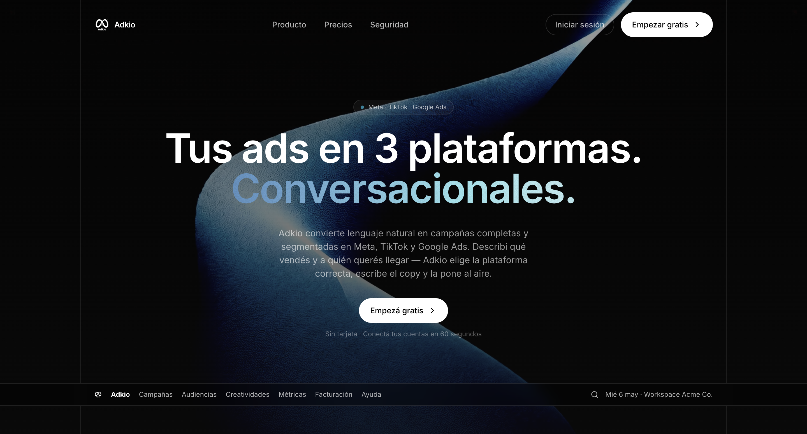
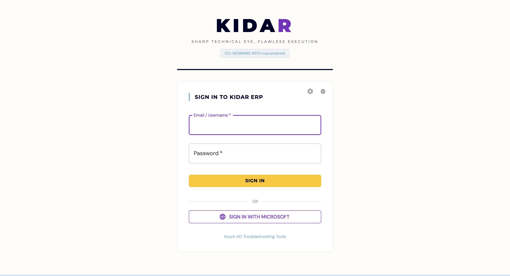
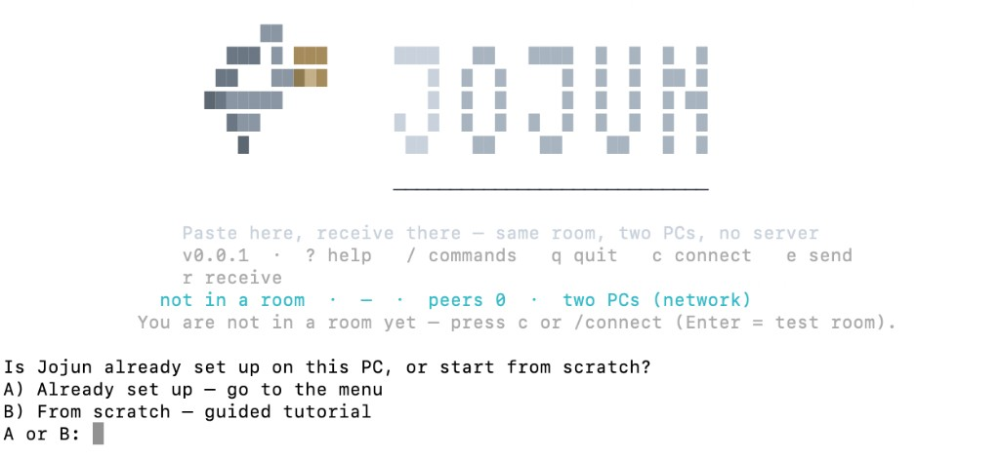

Full-Stack Developer with strong command of software architecture and AI. 3+ years on enterprise financial-sector projects (DataCrédito Experian), shipping APIs, interfaces and AWS deployments with security by design (OWASP).
Architecture, AI and end-to-end delivery
Full-Stack Developer with broad command of software architecture and artificial intelligence, with more than three years of experience on enterprise projects in the financial sector (DataCrédito Experian).
At Kidar I built Bitácora from scratch (Spring Boot + React on AWS). It is now in production and saves USD 18,000 per year.
At DataCrédito Experian I took part in the design and development of an AI-assisted data ingestion framework for Scala, with ingestions over 50% faster, and in an AI chatbot that personalizes the credit interface.
I design and deliver complete systems, from the data model and APIs to the interface and deployment on AWS, with security as a requirement from design (OWASP) and agile methodologies (Scrum).
In parallel, I lead the Go backend of an accounting audit platform in Brazil.
Tools and technologies I master
Scrum
Agile
Kanban
Clean Architecture
Test-Driven Development (TDD)
My professional journey
Built from scratch: Built the Spring Boot backend and the React frontend from scratch; the platform saves USD 18,000 per year.
Architecture & security: Designed the architecture, REST APIs and data model with OWASP Top 10 security; tested with JUnit, Mockito and Postman.
AWS deployment: Deployed on AWS (ECS, API Gateway, Aurora, S3, Lambda) with Docker and hands-off CI/CD, delivered by sprints.
AI ingestion framework: Took part, in a Scrum team, in the technical design and development of an AI-assisted data ingestion framework for Scala, Experian's core data platform: ingestions over 50% faster.
Credit interface chatbot: Took part in an AI chatbot that personalizes the credit interface, under strict financial-security standards and secure development (OWASP).
ERP & time tracking: Agile ERP and time-tracking tool with automated tests: −20% in the project-management cycle.
Legacy refactoring: Refactored over 20,000 lines of legacy code to Clean Architecture: −40% time per new feature.
Built a website for a client, from requirements gathering to deployment, with iterative deliveries and web security (OWASP).
Work that demonstrates my expertise
Founder and backend developer: Go services and AWS infrastructure for a product in operation, with secure development (OWASP) and agile delivery.

Yuno Hackathon (48 h, selected). Seven microservices on Docker Compose and PostgreSQL, with a dashboard that detects payment anomalies in real time.

Internal ERP and time-tracking tool built with Clean Architecture and automated tests: −20% in the project-management cycle.

P2P clipboard for the terminal: two laptops join the same room, one sends a snippet and the other receives it. No Discord, USB, or server.
Academic background and professional certifications